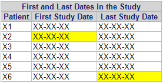

PROC REPORT
ExamplesLink
How to Write a Header/Footer in your TablesLink
1 2 3 4 5 6 7 8 9 10 11 12 13 14 | |
Specify the STYLE of Your Global HeaderLink
1 2 3 4 5 | |
Check these websites
Specify the STYLE of a Cell Based on Other Cell's ValueLink
1 2 3 4 5 6 7 8 9 10 | |
DEFINEthe variables involved in your conditional structure before the variable to which you want to apply the new formatDEFINEyour variables asDISPLAY NOPRINTif you want to use them for the conditional structure but you don't want them to appear in your table
Tip
Remember, PROC REPORT builds each row from left to right, so the value used as a condition to define the style must be to the left of the values whose style/format you want to change.
1 2 3 4 5 6 7 8 9 10 11 12 13 14 15 16 17 18 19 20 21 22 23 24 25 26 27 28 29 | |

Control Output Table WidthLink
If the margins of the page are defined
1 | |
and you
1 2 3 4 5 6 7 8 | |
Introducing Line BreaksLink
To introduce line breaks in the title or labels you can use the SPLIT= option.
If you want to introduce a line break on the variable's value you need to define a ODS ESCAPECHAR= and use the n on your string as in the following example:
Example
``` DATA addy; INFILE DATALINES DLM='|'; INPUT name ~$15. address ~$15. city $ state $; DATALINES; Debby Jones|1234 Johnny St|Chicago|IL Joe Smith|2345 Bobby Dr|New York|NY Ron Lee|3456 Suzy Ln|Miami|FL ; RUN;
ODS ESCAPECHAR='^';
PROC REPORT DATA=addy SPLIT='~'; COLUMN state city address name addblock; DEFINE state / DISPLAY NOPRINT ORDER=INTERNAL; DEFINE city / DISPLAY NOPRINT ORDER=INTERNAL; DEFINE address / DISPLAY NOPRINT ORDER=INTERNAL; DEFINE name / DISPLAY NOPRINT ORDER=INTERNAL; DEFINE addblock / COMPUTED 'Mailing~Address' FLOW WIDTH=30;
1 2 3 | |
RUN; ```
You can also force line breaks in the resulting tables to better visualize the data.
1 2 3 4 5 6 7 8 9 10 11 12 13 | |
Tip
If the variable is numeric a . will apear in the break row. You need to create a format to assign ' ' to ..
If you describe the new value of . as ' ' your numbers will be truncated.
Working with ACROSSLink
- Simple example:
1 2 3 4 5 6 7 8 9 | |
- Complex example:
1 2 3 4 5 6 7 8 9 10 11 12 13 14 15 16 17 18 19 20 21 22 23 24 25 26 | |
Check these websites
Defining your own variablesLink
Check these websites
There are two basic types of compute blocks; those that are associated with a location (the option BEFORE or AFTER follows the COMPUTE keyword), and those associated only with a report item. While the structure and execution of these two types of compute blocks is similar, how they are used and the timing of their execution can be quite different.
The compute block starts with the COMPUTE statement and terminates with the ENDCOMP statement. Usually the compute block is placed in the REPORT step after the DEFINE statements. The syntax of the compute block looks something like:
1 2 3 | |
The components of the COMPUTE statement include:
location(BEFORE|AFTER): Specifies when the compute block is to execute and ultimately what is to be done with the result of the compute block. When a location is specified without also specifying a report_item, the location will be at the start (BEFORE) or at the end (AFTER) of the report.report_item: When the result of the compute block is associated with a variable or report item, its name is supplied here. Thisreport_itemvariable can be any variable on theCOLUMNstatement. Whenreport_itemis a variable that either groups or orders rows (usage ofGROUPorORDER) you may also useBEFOREandAFTERto apply the result at the start or end of each group.options: Several options are available that can be used to determine the appearance and location of the result of the compute block.SAS language elements: Any number of SAS language elements can be used within the compute block. These include the use of executable statements, logical processing (IF-THEN/ELSE), and most of the functions available in the DATA step.
The compute block can be placed anywhere within the REPORT step, however generally compute blocks are grouped following the DEFINE statements.
Using the LINE StatementLink
- It can be used to insert a blank line
1 2 3 | |
- It can be used to add lines of text
1 2 3 4 | |
Note
In these LINE statements the @ is used, as it is in the DATA step PUT statement, to designate the column number. If a specific column is not specified with the @, and no justification options are specified, text will be centered.
When writing to ODS destinations other than LISTING, proportional fonts may make exact placement of values difficult, and may require you to use a trial-and-error approach, and to make things more interesting some destinations ignore the @ altogether.
- It can be used to write formatted values
1 2 3 | |
Note
The format could have also been used in the DEFINE statement, however in this case we wanted to show the unformatted value as well as the formatted group header.
Creating and Modifying ColumnsLink
1 2 3 4 5 6 | |